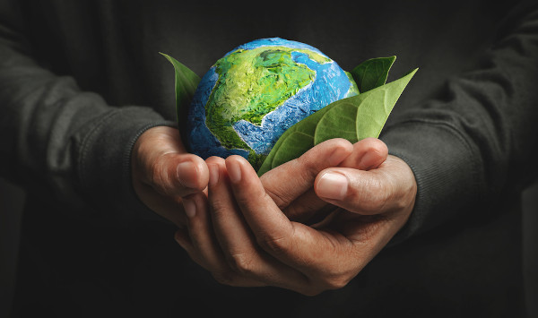

Em um mundo individualista, regido por uma acentuada cultura de consumo, hábitos sustentáveis surgem na busca pelo equilíbrio entre a disponibilidade de recursos naturais e a exploração dos mesmos pela sociedade. Apesar de muito se ouvir falar sobre sustentabilidade, seus fins nem sempre são compreendidos. Categoricamente, alcança-se a sustentabilidade através de um desenvolvimento social, ambiental e economicamente sustentável, que, por sua vez, busca satisfazer as necessidades da geração presente sem comprometer o abastecimento de recursos para a próxima geração. O despertar de uma consciência social acerca do aprimoramento desse desenvolvimento sustentável começa a ser trabalhado com a incorporação e a prática diária de pequenas ações.
Evitar o uso de sacolas plásticas, economizar água e energia elétrica, são algumas ações que exemplificam, de maneira simples, como a sustentabilidade pode ser incluída rotineiramente na vida da sociedade, desmistificando e tornando mais acessível a sua execução. Dessa forma, a educação ambiental torna-se uma ferramenta essencial para a construção de um mundo ecologicamente correto. Foi nesse cenário, que o projeto Tecnologia a serviço do meio ambiente buscou promover a propagação do pensamento sustentável ainda nos anos iniciais, através de informação, reutilização e coletividade. Já que, para que possa haver um desenvolvimento sustentável, primeiro é preciso existir um desenvolvimento humano, reaproximando o homem da natureza.
Em um mundo repleto de barreiras físicas, sociais e comunicacionais, a acessibilidade surge como um direito essencial, garantindo que todas as pessoas, com ou sem deficiência, tenham acesso pleno a espaços, informações e serviços. Vai além de adaptações físicas, abrangendo a inclusão em todos os aspectos da vida, promovendo igualdade e autonomia.
Pequenas ações, como a instalação de pisos táteis, placas em braille, rampas de acesso e tecnologias assistivas, mostram como a acessibilidade pode ser integrada ao cotidiano. Projetos educativos e sociais são fundamentais para conscientizar a sociedade sobre a importância de eliminar barreiras, criando um ambiente mais inclusivo e respeitoso para todos.
O deficiente visual enfrenta diversos desafios no dia a dia devido à falta de acessibilidade em muitos espaços e serviços. Para garantir sua inclusão, é fundamental implementar recursos como pisos táteis, placas em braille, sinalizações sonoras e tecnologias assistivas, que promovem autonomia e segurança.
Além disso, a conscientização da sociedade e a capacitação de profissionais são essenciais para eliminar barreiras e facilitar a interação. Com essas medidas, é possível assegurar que o deficiente visual tenha acesso pleno à educação, ao trabalho e à convivência social, promovendo igualdade de oportunidades.
A união entre tecnologia, sustentabilidade e acessibilidade é essencial para construir uma sociedade mais inclusiva e responsável. A tecnologia tem o poder de transformar realidades, oferecendo soluções inovadoras para reduzir impactos ambientais e superar barreiras enfrentadas por pessoas com deficiência. Quando aplicada com um olhar sustentável, pode otimizar o uso de recursos naturais, promover a economia circular e criar alternativas ecológicas para o desenvolvimento.
Ao integrar acessibilidade, essas soluções tornam-se mais inclusivas, garantindo que todos, independentemente de limitações, possam usufruir dos benefícios tecnológicos. Aplicativos com descrições em áudio, dispositivos assistivos alimentados por energia renovável e plataformas acessíveis são exemplos de como essa conexão pode impactar positivamente a sociedade. Trabalhar essa integração não apenas amplia oportunidades, mas também reforça o compromisso com um futuro mais sustentável, equitativo e acessível para todos.